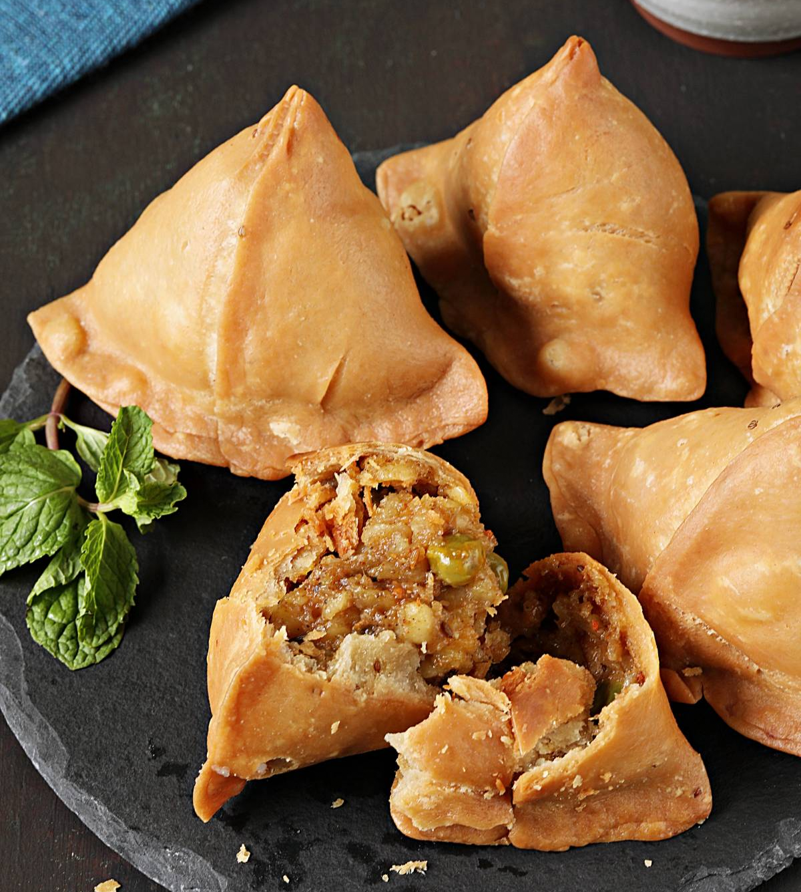

INTRO:
It's hard to resist a crispy and flaky Samosa filled with delicious spiced potatoes. This perfected chef's recipe will help you make the BEST potato Samosas at home. If you ever wondered how those eateries selling authentic Punjabi foods make the crispiest and flakiest samosas, you got to try this recipe.

Ingredients
- For the Pastry (Dough)
- All-Purpose Flour (Maida): 2 cups (250g)
- Ghee or Oil: 14 cup (60ml)
- Water: 6 tablespoons (90ml)
- Carom Seeds (Ajwain): 3% teaspoon
- Salt: 3/4 teaspoon
- For the Potato & Peas Filling
- Potatoes: 4 medium (500g), boiled and crumbled
- Green Peas: 12 cup (boiled or frozen)
- Oil or Ghee: 1 tablespoon
- Aromatics: 1 tbsp minced ginger, 1-2 chopped green chilies, 1 pinch hing (optional)
- Finishing: 4 tbsp chopped coriander leaves, 1 tsp lemon juice (or 1/2 tsp amchur)
- Salt: 1/2 teaspoon
- Filling Spices
- Whole: 3/4 teaspoon cumin seeds
- Powdered: 3/4 tsp garam masala, 3/4 tsp red chili powder, 1/2 tsp cumin powder, 1/2 tsp fennel powder (optional)
STEPS:
- Dough (Rest 30 Mins)
- Mix: Rub 2 cups flour, one-fourth cup oilfghee, three-fourth teaspoon carom seeds, and three-fourth teaspoon salt together with your hands for 3 to 4 minutes until it feels like breadcrumbs.
- Knead: Mix in 6 tbsp water tiny bits at a time. Knead into a stiff, firm dough. Cover and rest.
- Filling (Cool Completely)
- Sauté: Heat 1 tbsp oil. Sauté three-fourth teaspoon cumin seeds, I tbsp minced ginger, and green chilies. Add half cup peas and cook for 2 minutes.
- Spices & Potatoes: Stir in the spice powders (three-fourth teaspoon garam masala, three-fourth teaspoon chili powder, half teaspoon cumin powder, half teaspoon fennel powder) and 4 boiled, crumbled potatoes. Sauté for 3 minutes, then finish with 4 tbsp coriander and 1 tsp lemon juice.
- Shape & Seal
- Roll: Cut dough into 5 balls. Roll one into a medium-thick oval and slice it in half to make two semicircles.
- Cone: Wet the straight edge With water, fold it into a cone, and pinch the seam Shut.
- Stuff: Fill with potato masala, wet the circular rim, make a small pleat on one side to help it stand, and pinch the top flat to seal completely.
- Low & Slow Fry
- Temperature: Slide samosas into moderately hot oil on a low flame. The oil should only produce tiny bubbles—no loud sizzling.
- Fry on low for IO to 12 minutes until the outer crust hardens, then crank the heat to medium and fry until deep golden brown.